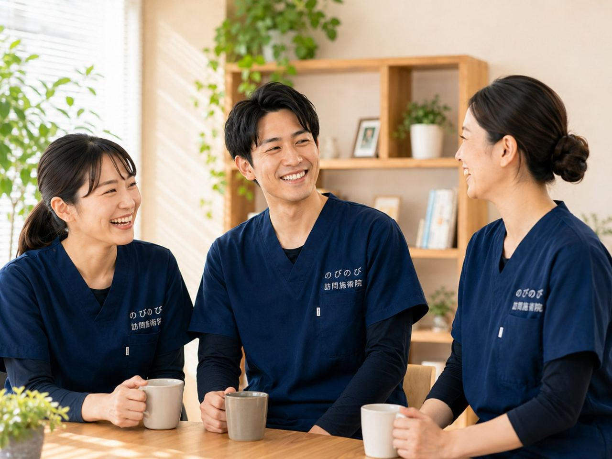

階段を下りるとき膝がずきっとする。椅子から立ち上がる最初の一歩がこわい。歩き出しだけ痛くて、しばらくすると楽になる。大阪市旭区にお住まいで、こうした膝の不調をかかえながら、痛い膝で通院すること自体が負担になっている、そんなご本人やご家族はめずらしくありません。高齢の方に多い膝の痛みの背景と、まず病院へ行ってほしい目安、そして自宅で受けられる訪問鍼灸に何ができるのかを整理します。
この記事のポイント
膝の痛みの診断と治療は、整形外科など医療機関が主役です。すり減った軟骨や進んだ変形を鍼灸で元どおりにすることはできません。訪問の鍼灸ができるのは、膝まわりや太もも、お尻の筋肉のこわばりを和らげて血のめぐりを促し、動ける範囲を保つ手伝いという補助的な役割です。医師が必要と認め通院がむずかしければ医療保険の対象になり、自己負担は1割の方で1回およそ395円（総額3,950円）が目安。効果には個人差があります。
大阪市旭区で、膝の痛みを抱えたまま家で過ごしている方へ
千林や森小路のあたりを歩いていると、商店街のにぎわいと、暮らしの気配が残る路地が広がっています。旭区は京阪本線と地下鉄谷町線が交わる暮らしやすい街ですが、膝に痛みを抱えていると、その何気ない段差ひとつが外出をためらう理由になってしまいます。「昔は城北公園までよく散歩したのに、今は玄関の上がり框で立ち止まる」。そんな声を、太子橋や清水、新森、中宮といった地域のご自宅でよく耳にします。
のびのび訪問施術院は、こうした膝の痛みでお困りの方のもとへ、施術者が直接ご自宅までうかがう訪問鍼灸マッサージ院です。通院そのものが負担になっている方に、住み慣れた部屋で受けていただけるのが訪問の強みです。
変形性膝関節症と、旭区での暮らしのつらさ
膝の痛みの背景で多いのが、加齢や使い方の積み重ねによる変形性膝関節症です。軟骨がすり減って関節の動きがぎこちなくなり、立ち座りや階段の上り下り、正座がつらくなっていきます。駅の階段や、ちょっとした段差が「以前は何ともなかったのに」と感じられるようになるのは、こうした変化のあらわれです。朝起きたときの膝のこわばりや、膝まわりの腫れ、しゃがみきれない・伸ばしきれないといった可動域の制限も、日常のなかで少しずつ生活の幅を狭めていきます。
膝の痛みそのものがつらいのはもちろんですが、それ以上に見過ごせないのが、痛みをかばって動かなくなることの影響です。膝の症状については膝の痛みで立ち座りがつらい方へのページでも詳しくふれています。
「動かない」がまねく悪循環をどう食い止めるか
膝が痛むと、人はどうしても膝をかばい、歩く距離を減らします。すると太ももの筋力が落ち、その筋力低下がさらに膝を不安定にして痛みを強める。この悪循環が、外出の減少とあいまって進んでいきます。生江や赤川のあたりで一人暮らしをされている方だと、買い物や近所づきあいの機会が減り、気づけば一日ほとんど部屋の中、ということも珍しくありません。使わない期間が続くことで起こる廃用は、膝だけでなく全身の動きにも影を落とします。
だからこそ大切なのは、痛みと折り合いをつけながら、残っている動きをできるだけ保っていく視点です。訪問では、こわばった膝まわりや太ももの筋肉をていねいにほぐし、無理をしない形で関節を動かし、ご自宅で続けられる簡単な機能訓練までを一続きのものとして進めます。この機能訓練は施術の一環として含み、追加料金はいただきません。
膝の痛みに、医療保険はどう使えるのか
のびのび訪問施術院は、はり・きゅうを施術のベースにしており、医師の同意にもとづき医療保険（療養費）で受けられます。医療保険のはり・きゅうには神経痛・リウマチ・頸肩腕症候群・五十肩・腰痛症・頸椎捻挫後遺症という対象の疾病があり、膝の痛みそのものは、これらに該当する場合や医師の判断に応じて対応を検討します。いずれも病気そのものを治すものではなく、動きや暮らしやすさを支えるための施術で、効き方には個人差があります。
利用には医師の同意書が必要ですが、要介護認定は不要です。介護保険の限度額とは別枠のため、デイサービスなどを使いながらでも併用できます。ただし同一部位について、医療保険のリハビリと鍼灸を同じ月に同時に算定することはできません。旭区での受け方をまとめた大阪市旭区の訪問鍼灸マッサージもあわせてご覧ください。
料金の目安と、旭区での対応エリア
費用の見通しが立つと、続けやすくなります。1回の施術は総額3,950円で、医療保険を使うと自己負担は1割の方で約395円が目安です。たとえば週2回を1割で続けた場合、ひと月およそ3,160円。エリア内であれば別途の出張費はかからず、お住まいがどこでも料金は一律です。細かな内訳は「料金はいくら？医療保険の自己負担額と仕組み」で詳しくご紹介しています。
訪問は千林・森小路・関目といった京阪沿線から、高殿・清水・新森・中宮・大宮・太子橋、そして生江・赤川、城北公園の周辺まで、旭区内を幅広くおうかがいしています。「うちまで来てもらえるだろうか」と気になる方は、「対応エリアはどこまで来てもらえる？」もご確認ください。膝の痛みとどう付き合っていくか、まずはお気軽にご相談いただければと思います。
よくある質問
旭区にも来てもらえますか？
はい。千林、森小路、清水、大宮、太子橋、新森、高殿など旭区の各地域へ伺います。エリア内は別途の出張費がかからず同じ料金です。まずはお住まいの状況と膝の困りごとをお聞かせください。
膝の痛みでも医療保険で受けられますか？
膝まわりの慢性的な痛みやこわばりについて医師が施術を必要と認め、通院がむずかしければ、はり・きゅうが医療保険の対象になる場合があります。まずは整形外科などで診てもらいましょう。同意書の手続きは引き受けます。
変形性膝関節症は鍼灸で治りますか？
変形やすり減った軟骨を元に戻すものではありません。まわりの筋肉のこわばりを和らげ、動きやすさを保つ補助的なケアです。治療は医療機関にご相談ください。感じ方には個人差があります。
要介護認定を受けていなくても利用できますか？
できます。訪問の鍼灸は医療保険で受けるもので、医師の同意があれば介護認定の有無は問いません。膝の痛みで医師が施術を必要と認め、通院がむずかしいことが条件です。
急に膝が腫れて熱をもっています。伺ってもらえますか？
急に大きく腫れて熱をもつ、転倒後に体重をかけられない、水がたまるといったときは、まず整形外科などの受診をおすすめします。強い炎症や骨・靭帯のトラブルが隠れていることがあるためです。
1回いくらかかりますか？
1回の施術は総額3,950円で、1割負担の方はおよそ395円が目安です。週3回で月あたりおよそ4,740円（1割）。介護保険の限度額とは別枠で、お支払いは月ごとにまとめて明細をお渡しします。
ケアマネや施設を通して相談してもいいですか？
構いません。担当のケアマネジャーと連携しながら進めますし、高齢者向けの施設に入っている方にも伺えます。ご本人・ご家族・ケアマネ・施設の方、どなたからのご連絡でも、相談だけでも大丈夫です。